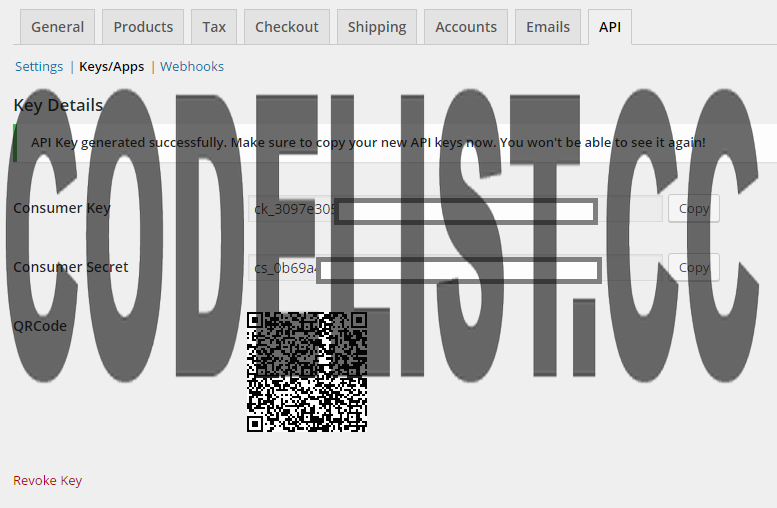

Thank you for purchasing this application. If you have any questions that are beyond the scope of this help file, please feel free to email us contact@themeleger.com. Thanks so much!
Ma Boutique is a full online shopping mobile application available for both IOS and Android that allow you to create an app for your Woocommerce store easily and without having to code or hire a developer which then you can upload to App Store and Play Store.
Before starting you need to Install Ionic Framework on your computer, to do that use NPM (If you don't have NodeJs installed download it from here)
Then open up your terminal and run the following command:
npm install -g cordova ionic
You now have Ionic framework installed on your computer.
Now, you need to make sure that you have the required SDK to build your mobile app.
Setting up IOS and Android SDK is well documented on the Apache Cordova website:
Now that we have all the requirements for building mobile apps with ionic, we can start by creating our project.
Open up the terminal and navigate to the folder you want to create your app in, then run this command
* Always replace AppName with the name of your App
ionic start AppName blankNow navigate to the app folder
cd AppName
Then we add IOS and Android platforms (only add the one you're planning to use):
ionic platform add ios ionic platform add android
Copy and replace the dowloaded www folder with the one in the AppName folder.
Then we need to add the Cordova inApp browser plugin:
cordova plugin add cordova-plugin-inappbrowser
Now, we're good to go, you can find more about creating a project with Ionic on their official documentation.
Let's start by setting up our API configuration:
Enabling REST API in Woocommerce
Generating the API keys
Example of generated keys

Now we need to configure Woocommerce by a simple Copy/Paste operation.
It's time to generate our app configuration, you can do it easily with our generator or you can do it manully.
Store Title: The title displayed in the header bar of the app Store Link: your store homepage URL Checkout Link: your store checkout URL Customer Key & Customer Secret: The keys generated when setting up the API Timeout: timeout when calling the server before throwing an error (default 20000 ms) Messages: you can change the messages displayed to the user or you can leave it to default
Generation the configuration file
var config = {
title: 'Boutique', // Title displayed in the app
link: 'http://192.168.1.3/wp/', // Woocommerce homepage URL
checkout: 'http://192.168.1.3/wp/index.php/checkout/', // Woocommerce checkout URL
timeout: 20000, // Timeout of api calls in milliseconds
api: {
link: 'http://192.168.1.3/wp/'+'wc-api/v3/', // API link
key: 'ck_ab881ffc26e2175cac94013c5276ff38be129a2c', // API customer key
secret: 'cs_83b1c7248210865e26856a29974200ee17bbf881', // API customer secret
signature: 'HMAC-SHA1', // API signature algorithm
version: '1.0' // OAuth Version
},
messages: { // HTML Allowed
sale_text: 'Sale', // Text on the sale badge
added_cart: 'Successfully added to your cart !', // Message to show when a product is added to cart
exists_cart: 'Product already exist in your cart !', // Message to show when a product already exists in cart
server: 'There was a problem connecting to the server !<br>Please try again later', // Message to show if there's no server connection
no_internet: 'Please check your internet connection !', // Message to show if there's no internet connection
empty: "There's no products in this categorie.", // Message to show if a categorie is empty
empty_cart: "There's no item in your cart !", // Message to show if the user cart is empty
empty_shop: "The shop is empty", // Message to show if the website have no categories
error: 'There was an error' // Generic error message
},
views: { // Views title
homePage: 'Boutique',
cart: 'Cart'
}
};
You can test your app in the browser, on an emulator or on your device:
ionic serve
ionic build ios ionic emulate ios
and for Android:
ionic run android
Use the same commands as in an emulator but with a device plugged in.
Find more about testing ionic app here.
You can change the appearance of your app by using one of our themes or by creating your own theme.
You can create your own theme with SASS.
Now we have a working Woocommerce mobile app ready to be published for both IOS and Android. If you don't know how to build and publish mobile apps you can check out this step-by-step documentation created by the Ionic team.
If you run into any problems during installation, use, or styling please feel free to contact us at contact@themeleger.com.